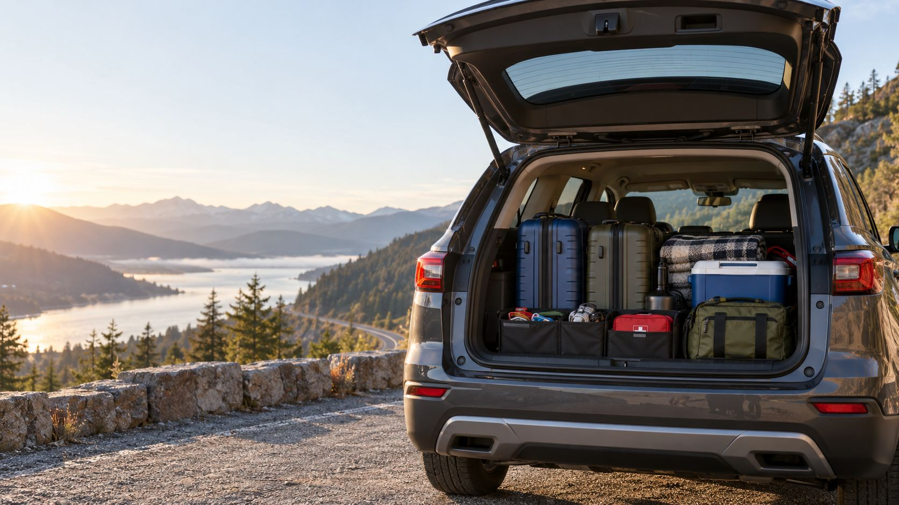
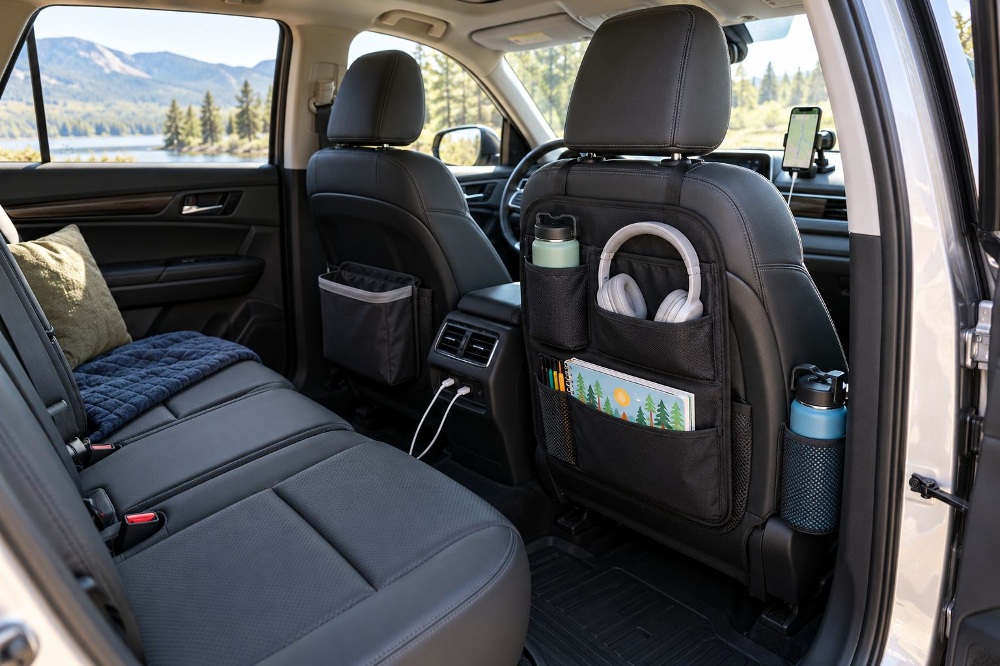
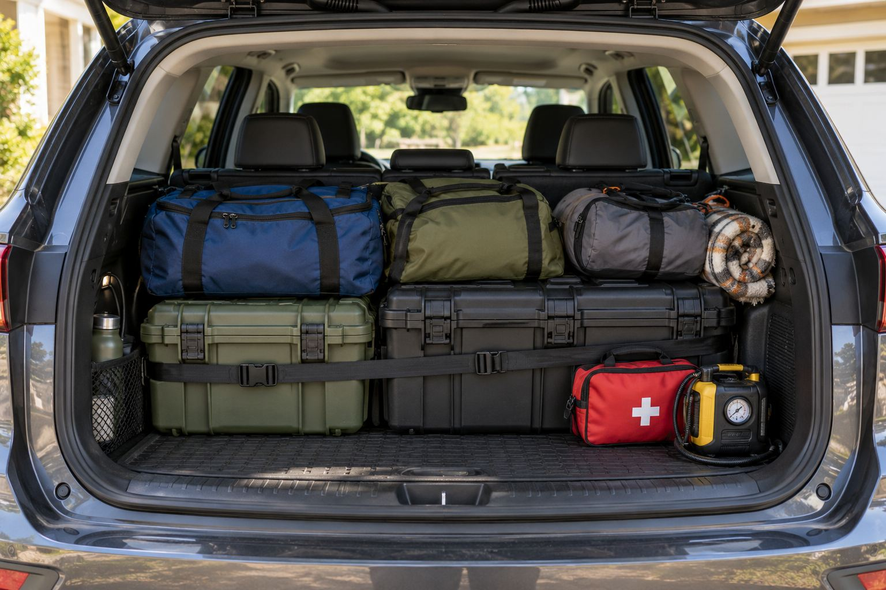

How to set up your car for a long road trip.
A practical system for keeping the driver focused, passengers comfortable, emergency gear accessible and luggage under control.

A good road-trip setup comes down to putting the right things in the right places. A phone charger is no use when it is buried in a suitcase. An emergency kit cannot help from underneath a fully loaded trunk. Snacks scattered across the back seat make a mess before the first fuel stop.
Before you load any luggage, divide the car into practical zones for driving, passengers, food, emergencies and cargo. This guide shows how to build a setup that stays useful after several hours on the road.
1. Start with the vehicle
Check the car before you think about organizers, coolers or travel accessories. A well-organized cabin cannot make up for worn tires or overdue maintenance.
Inspect the tires
Check tire pressure when the tires are cold. Use the pressure listed on the driver-side door placard, not the maximum pressure printed on the tire.
- Inspect tread depth and uneven wear.
- Look for cracks, bulges or visible damage.
- Check the spare-tire pressure.
- Confirm where the jack and wheel wrench are stored.
- Review the tire-repair kit if the car has no spare.
A portable 12-volt tire inflator is useful on long drives. Store it where you can reach it without unloading the trunk.
Check fluids and basic maintenance
- Engine oil and coolant
- Windshield-washer fluid and wiper condition
- Brake fluid
- Exterior lights
- Battery condition
If a warning light is already on, deal with it before you leave. A long drive is a poor time to find out whether a small problem turns serious.
2. Divide the car into five zones
Treat the vehicle as a small moving workspace. Every item should have a clear home:
- Driver zone: navigation, water and essential controls.
- Front-passenger zone: route support and quick-access supplies.
- Rear-seat zone: passenger comfort and entertainment.
- Food and drink zone: cooler, snacks and cleanup.
- Cargo and emergency zone: luggage, tools and roadside equipment.
Simple rule: if you will use an item while the car is moving, it should not be buried in the trunk.
3. Keep the driver area distraction-free
The driver should be able to reach navigation, water and essential controls without searching. A practical driver area may include a secure phone mount, a short charging cable, an insulated bottle, sunglasses, tissues and a toll pass.
Mount the phone where it does not block the windshield or interfere with controls. Set the route and audio before you move, and keep loose objects off the dashboard.
Build a reliable charging setup
- A multi-port USB-C car charger
- One cable for each device type
- A short driver cable
- Longer rear-passenger cables
- A fully charged power bank
- A small cable pouch
Choose a charger with enough output for several devices at once. A low-powered adapter may only hold a phone's battery level while navigation is running.

4. Organize the passenger area around access
Ask what passengers will need while the vehicle is moving. Water, snacks, medication, wipes, headphones and a light layer usually belong in the cabin. A seat-back or console organizer gives each passenger a defined storage space.
Traveling with children
Give each child one compact activity pouch instead of a large shared bin. Include headphones, a small activity book, a few toys and a snack container. Keep a complete spare outfit in the cabin, with a sealable bag for wet or dirty clothing.
Traveling with pets
Create a secure pet area with an appropriate restraint, carrier or vehicle barrier. Keep the leash, water bowl, waste bags, towel and medication accessible. A waterproof seat protector helps with cleanup but does not replace a proper restraint.
5. Create a food and drink station
A cooler is most useful when you can reach it without opening the trunk at every stop. Depending on the vehicle, place it behind the front passenger seat, between unused rear seats or near the cargo-area opening.
Road-food station
- Water bottles
- Insulated cooler
- Portioned snacks
- Napkins
- Wet wipes
- Reusable cutlery
- Small waste bags
- Paper towels
Keep dry snacks in a separate container. Do not leave a heavy cooler unsecured on a seat, where it can move dangerously during hard braking.
6. Keep emergency equipment accessible
Emergency supplies should not sit underneath suitcases, camping equipment or a packed trunk organizer. Store them near the cargo opening or in a side compartment.
- First-aid kit
- Portable jump starter
- Tire inflator and pressure gauge
- Flashlight or headlamp
- Reflective warning triangles
- Work gloves and basic tools
- Emergency blanket
- Weather-appropriate supplies
Charge a portable jump starter before departure and check it periodically. Do not assume it is ready just because it has been sitting in the car.

7. Load the trunk safely
Pack heavier items low and close to the rear seat backs. This keeps weight forward and reduces the chance of heavy objects shifting.
- Heavy boxes and equipment
- Large suitcases
- Soft bags
- Frequently used items
- Emergency equipment near the opening
Fill awkward gaps with soft items instead of stacking hard objects too high. Keep rear visibility clear where you can, and secure loose cargo with tie-downs, nets or a properly fitted organizer.
Keep one arrival bag accessible
Pack a small bag with a change of clothes, toiletries, medication, charging cables, sleepwear and reservation details. That way you do not have to unload the whole vehicle after a long driving day.
8. Prepare for the weather
Hot-weather trips
- Windshield and rear-window shades
- Extra drinking water
- Insulated bottles
- Small cooler
- Sunscreen
Never leave children or animals unattended in a parked vehicle.
Cold-weather trips
- Warm layers, gloves and hats
- Ice scraper
- Compact shovel
- Traction aid
- Emergency blanket
- Low-temperature washer fluid
Prepare for conditions along the route, and look beyond the forecast at your destination. For a full cold-weather list, see the winter road trip checklist.
9. Test the setup before departure
Load the car early enough to fix problems, then run through this final check:
- Driver has clear visibility
- All seat belts work normally
- Heavy objects are secured
- Water and medication are reachable
- Emergency gear is accessible
- Charging cables work
- The trunk closes easily
- Nothing can roll or spill
Take a short test drive if the vehicle is heavily loaded. Listen for shifting cargo and notice whether the car feels different under braking.
What is worth buying
The most useful road-trip products fix problems that come back every trip. A trunk organizer contains loose cargo, a fast charger keeps navigation running, a cooler cuts unnecessary stops, window shades make the rear seat more comfortable, and a jump starter or tire inflator gives you backup that does not depend on anyone else.
You may already own several of these. Mark them as covered in the planner and spend only on the gaps for your vehicle and trip.
Build your road-ready setup
A compact car with two adults needs a different setup from an SUV carrying children across the country. Choose your vehicle, trip type and conditions to get a focused plan.
Related: the trunk organization guide, the cross-country drive guide and the winter road trip checklist. As an Amazon Associate, CarKitCost may earn from qualifying purchases.